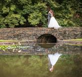
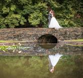

I am a Raleigh based event photographer. I capture all types of special occasions, but I have dedicated my photography to weddings and engagements as well as family, children, pet and maternity portraits.
If you are in need of a quality affordable event photographer to capture your memorable event, then please continue. Enjoy the images, and contact me, if you wish.